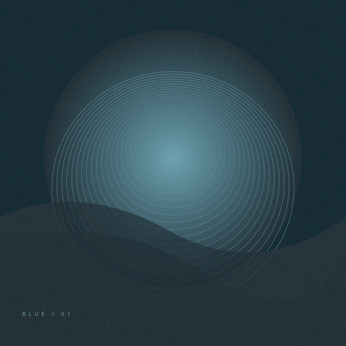

LESS SCROLLING. MORE LISTENING.
Stay a little longer.
Three sounds for the space between things.
Put something on. Make yourself at home.

AFTER HOURS RECORDINGSORIGINAL SERIES / 001↗
ON THE TURNTABLE
Blue Hour
After Hours Studio · Ambient / Downtempo
THE EVENING EDIT3 ORIGINAL TRACKS
A change of pace.
A small collection of electronic sketches.
Made for a moment of your own.
A little less noise.
All you need is a moment and a pair of headphones.
Original synthesized audio & artwork. No samples.
About the music & artwork ↗
Ready when you are0:00 / 0:32
YOUR PICKS / YOUTUBE
Bring your own soundtrack.
Pick one of your songs, or paste a YouTube link to play something else.
PLAYBACK CONTROLS ARE INSIDE THE YOUTUBE PLAYER
Your next favorite goes here.
Choose a song above to load the YouTube player.